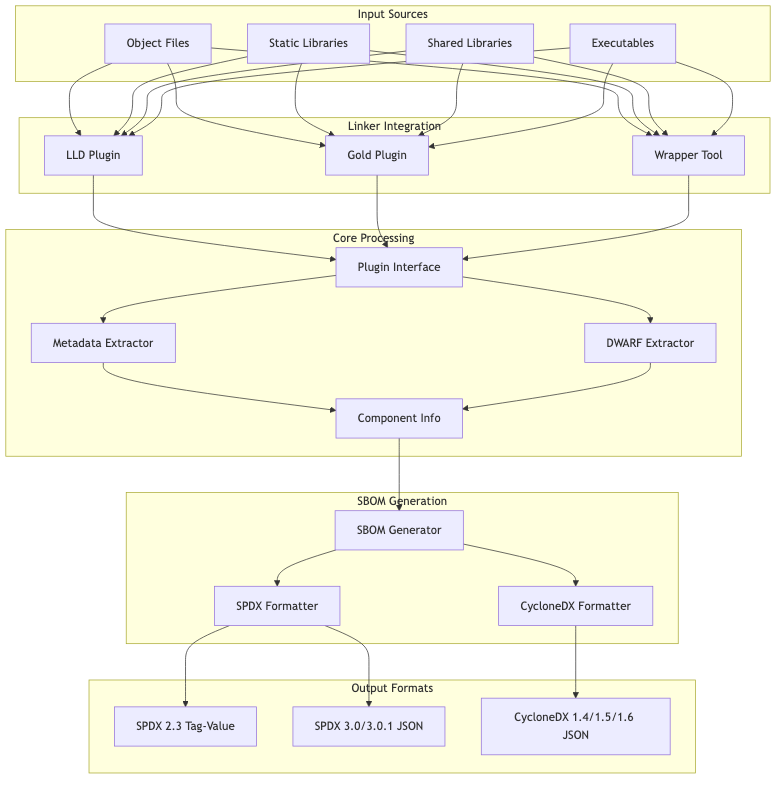
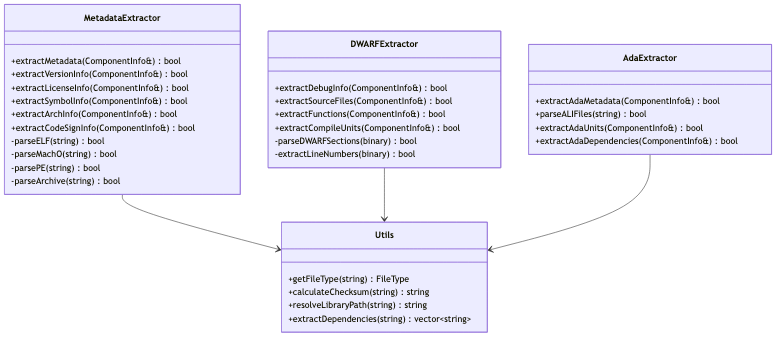
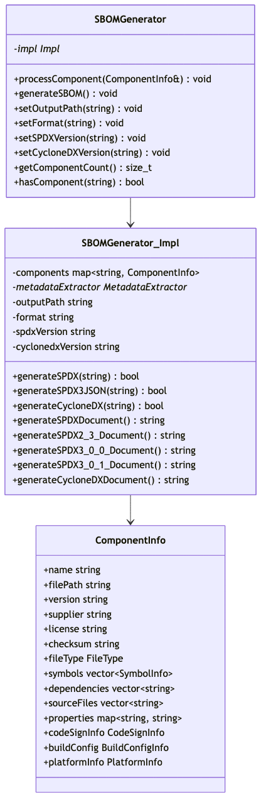
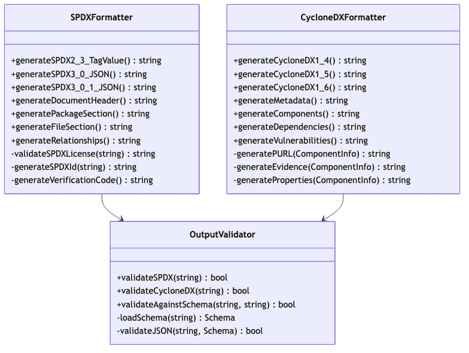
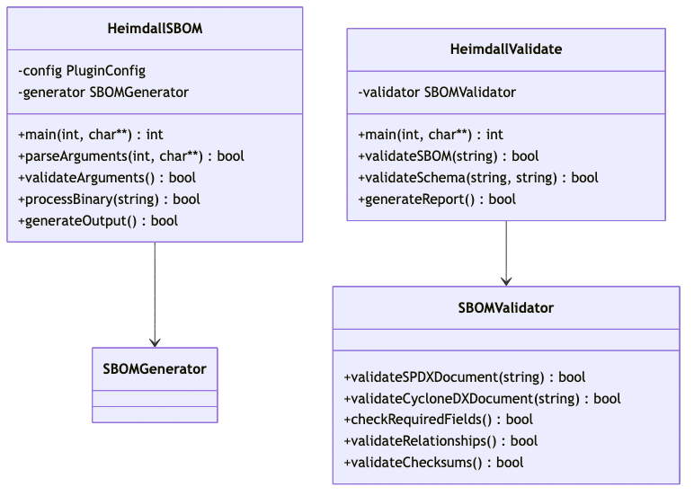
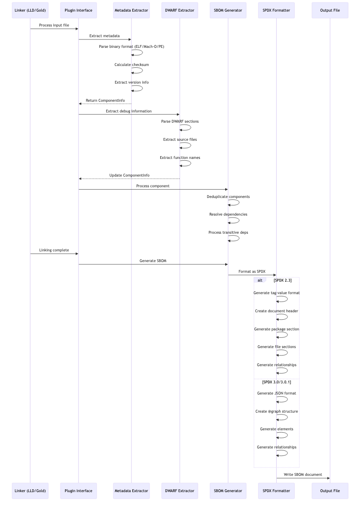
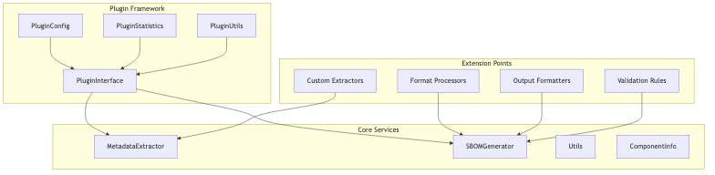

Heimdall SBOM Generator Architecture
This document provides a comprehensive overview of the Heimdall SBOM (Software Bill of Materials) generator architecture, design patterns, and implementation details.
1. Overview
Introduction to SBOM Formats
Software Bill of Materials (SBOM) documents are critical for supply chain security and software transparency. Heimdall supports the two leading SBOM standards:
SPDX (Software Package Data Exchange)
- SPDX 2.3: Tag-value format, well-established industry standard
- SPDX 3.0/3.0.1: JSON format with enhanced relationship modeling
- Provides comprehensive license compliance and security vulnerability tracking
- Strong ecosystem support with tools like FOSSology, REUSE, and commercial scanners
CycloneDX
- CycloneDX 1.4: Established JSON format for security-focused SBOMs
- CycloneDX 1.5: Added enhanced vulnerability and licensing support
- CycloneDX 1.6: Latest version with improved evidence and compliance features
- Designed specifically for application security and vulnerability management
- Strong integration with security tools like OWASP Dependency-Track
Project Description
Heimdall is a comprehensive SBOM generation tool that integrates directly with the linking process via linker plugins for both LLVM LLD and GNU Gold linkers. It automatically captures all components that actually make it into final binaries, providing accurate and complete software bills of materials.
Main Features and Goals
- Dual Linker Support: Native plugins for both LLVM LLD and GNU Gold linkers
- Multi-Format Output: Generates SPDX 2.3, 3.0, 3.0.1 and CycloneDX 1.4, 1.5, 1.6 compliant SBOMs
- Comprehensive Analysis: Extracts versions, licenses, checksums, dependencies, and debug information
- Cross-Platform Support: Native support for Linux and macOS with ELF, Mach-O, and PE formats
- Package Manager Integration: Recognizes components from Conan, vcpkg, and system packages
- Security Focus: Enables vulnerability scanning and compliance tracking
Intended Audience
- Software Developers: Integrate SBOM generation into build systems
- DevOps Engineers: Automate SBOM creation in CI/CD pipelines
- Security Teams: Track software components for vulnerability management
- Compliance Officers: Generate compliance reports for regulatory requirements
- Open Source Maintainers: Provide transparency into project dependencies
2. System Architecture
High-Level System Design
The Heimdall system follows a modular architecture with clear separation of concerns:

Component Overview
The system consists of several key architectural layers:
- Input Layer: Handles various binary formats (ELF, Mach-O, PE, archives)
- Integration Layer: Provides linker plugin interfaces for LLD and Gold
- Processing Layer: Extracts metadata, debug information, and dependencies
- Generation Layer: Creates standardized SBOM documents
- Output Layer: Formats data according to SPDX and CycloneDX specifications
3. Module Design
Input Parsers
The input parsing system handles multiple binary formats and file types:

Key Features:
- Multi-format Support: Handles ELF (Linux), Mach-O (macOS), PE (Windows), and archive formats
- Debug Information: Extracts DWARF debug data for source file mapping
- Dependency Resolution: Resolves library dependencies and @rpath references
- Checksum Calculation: Generates SHA-256 checksums for integrity verification
- Ada Support: Specialized extraction for Ada Language Interface (ALI) files
Plugin Architecture
The plugin system provides a unified interface for different linkers:

Design Patterns:
- Abstract Factory: PluginInterface defines common interface
- Strategy Pattern: Different implementation strategies for LLD vs Gold
- Configuration Pattern: Centralized configuration management
- PIMPL Idiom: Private implementation to hide linker-specific details
SBOM Generator
The core SBOM generation engine handles multiple output formats:

Key Capabilities:
- Multi-Version Support: Generates SPDX 2.3, 3.0, 3.0.1 and CycloneDX 1.4, 1.5, 1.6
- Dependency Tracking: Handles both direct and transitive dependencies
- Component Deduplication: Prevents duplicate entries in SBOM output
- Rich Metadata: Includes debug info, code signing, and platform details
- Schema Compliance: Ensures output validates against official schemas
Output Formatters
Specialized formatters handle different SBOM specifications:

CLI Interface
Command-line interface for standalone SBOM generation:

4. Data Flow
SBOM Generation Flow for SPDX
The following diagram shows how Heimdall processes input files to generate SPDX-compliant SBOMs:

CycloneDX Generation Flow
The following diagram shows the CycloneDX-specific generation process:

5. Extensibility and Plugins
Plugin Development Framework
Heimdall provides a comprehensive framework for developing new plugins:

Adding New Linker Support:
- Implement PluginInterface: Create new plugin class inheriting from PluginInterface
- Linker Integration: Implement linker-specific callbacks and hooks
- Component Processing: Use existing MetadataExtractor and SBOMGenerator
- Configuration: Extend PluginConfig for linker-specific options
Example Plugin Structure:
class CustomLinkerPlugin : public PluginInterface
{
public:
bool initialize() override;
void processInputFile(const std::string& filePath) override;
void processLibrary(const std::string& libraryPath) override;
void generateSBOM() override;
private:
std::unique_ptr<CustomAdapter> adapter;
};
Adding New Output Formats:
- Extend SBOMGenerator: Add new format generation methods
- Create Formatter: Implement format-specific generation logic
- Schema Validation: Add validation for new format
- Documentation: Update format support matrix
Format Extension Architecture

Configuration and Customization
The plugin system supports extensive configuration options:
# heimdall-config.yaml
output:
format: "spdx" # spdx, cyclonedx, custom
version: "3.0.1" # format-specific version
path: "./sbom.json"
processing:
extract_debug_info: true
include_system_libraries: false
transitive_dependencies: true
parallel_processing: true
filters:
exclude_patterns:
- "*/test/*"
- "*/build/*"
include_patterns:
- "*/src/*"
- "*/lib/*"
metadata:
calculate_checksums: true
extract_licenses: true
extract_versions: true
follow_symlinks: false
linker:
lld:
enabled: true
plugin_path: "./lib/heimdall-lld.so"
gold:
enabled: true
plugin_path: "./lib/heimdall-gold.so"
6. Error Handling and Logging
Error Management Strategy
Heimdall implements a comprehensive error handling and logging system:

Error Classification:
- Fatal Errors: Plugin initialization failures, invalid configurations
- Processing Errors: File parsing failures, dependency resolution issues
- Warnings: Missing metadata, unsupported file formats
- Debug Messages: Detailed processing information
Logging Architecture:
namespace heimdall {
namespace logging {
enum class LogLevel {
FATAL,
ERROR,
WARNING,
INFO,
DEBUG
};
class Logger {
public:
static void log(LogLevel level, const std::string& message);
static void setLogLevel(LogLevel level);
static void setLogFile(const std::string& path);
static void enableStructuredLogging(bool enable);
};
// Convenience macros
#define LOG_FATAL(msg) Logger::log(LogLevel::FATAL, msg)
#define LOG_ERROR(msg) Logger::log(LogLevel::ERROR, msg)
#define LOG_WARNING(msg) Logger::log(LogLevel::WARNING, msg)
#define LOG_INFO(msg) Logger::log(LogLevel::INFO, msg)
#define LOG_DEBUG(msg) Logger::log(LogLevel::DEBUG, msg)
}}
Error Recovery Strategies:
- Graceful Degradation: Continue processing when non-critical errors occur
- Fallback Mechanisms: Use alternative methods when primary approaches fail
- Partial Results: Generate SBOMs with available data when some components fail
- Error Reporting: Detailed error messages with suggestions for resolution
Example Error Scenarios
- Missing Dependencies: Continue processing but mark dependency as unresolved
- Corrupted Binary: Skip file but log detailed error information
- Permission Issues: Attempt alternative access methods or skip with warning
- Format Validation: Generate best-effort output with validation warnings
7. Example Use Case
Step-by-Step Walkthrough: CMake Build with Heimdall
This section demonstrates a complete workflow using Heimdall with CMake, including both Gold and LLD plugin usage.
Project Setup
CMakeLists.txt:
cmake_minimum_required(VERSION 3.16)
project(ExampleApp VERSION 1.0.0)
set(CMAKE_CXX_STANDARD 17)
# Find Heimdall
find_package(PkgConfig REQUIRED)
pkg_check_modules(HEIMDALL REQUIRED heimdall)
# Create executable
add_executable(myapp
src/main.cpp
src/utils.cpp
src/math.cpp
)
# Link with libraries
target_link_libraries(myapp
${CMAKE_DL_LIBS}
pthread
ssl
crypto
)
# Configure Heimdall SBOM generation
if(CMAKE_CXX_COMPILER_ID STREQUAL "Clang")
# Use LLD linker
target_link_options(myapp PRIVATE
"SHELL:-fuse-ld=lld"
)
# Add post-build SBOM generation using wrapper
add_custom_command(TARGET myapp POST_BUILD
COMMAND heimdall-sbom
${HEIMDALL_LLD_PLUGIN}
$<TARGET_FILE:myapp>
--format spdx-3.0.1
--output ${CMAKE_BINARY_DIR}/myapp.spdx.json
--verbose
COMMENT "Generating SPDX SBOM for myapp"
)
else()
# Use Gold linker with plugin interface
target_link_options(myapp PRIVATE
"SHELL:-fuse-ld=gold"
"SHELL:-Wl,--plugin=${HEIMDALL_GOLD_PLUGIN}"
"SHELL:-Wl,--plugin-opt=sbom-output=${CMAKE_BINARY_DIR}/myapp.cyclonedx.json"
"SHELL:-Wl,--plugin-opt=format=cyclonedx-1.6"
"SHELL:-Wl,--plugin-opt=verbose"
)
endif()
Build Process Sequence

Generated SBOM Output
SPDX 3.0.1 JSON (LLD example):
{
"@context": "https://spdx.org/rdf/3.0.1/spdx-context.jsonld",
"@graph": [
{
"spdxId": "spdx:SPDXRef-DOCUMENT",
"type": "SpdxDocument",
"spdxVersion": "SPDX-3.0.1",
"name": "myapp",
"documentNamespace": "https://spdx.org/spdxdocs/heimdall-2025-01-27T12:34:56Z",
"creationInfo": {
"spdxId": "spdx:CreationInfo-1",
"type": "CreationInfo",
"created": "2025-01-27T12:34:56Z",
"createdBy": [
{
"type": "Tool",
"name": "Heimdall SBOM Generator-2.0.0"
}
]
},
"dataLicense": "CC0-1.0",
"files": [
{
"@id": "spdx:SPDXRef-myapp",
"type": "File",
"fileName": "/path/to/build/myapp",
"checksums": [
{
"type": "Checksum",
"algorithm": "SHA256",
"checksumValue": "a1b2c3d4e5f6..."
}
]
}
],
"packages": [
{
"@id": "spdx:SPDXRef-Package-myapp",
"type": "Package",
"name": "myapp",
"versionInfo": "1.0.0"
}
],
"relationships": [
{
"type": "Relationship",
"relationshipType": "CONTAINS",
"relatedSpdxElement": "spdx:SPDXRef-myapp"
}
]
}
]
}
CycloneDX 1.6 JSON (Gold example):
{
"bomFormat": "CycloneDX",
"specVersion": "1.6",
"version": 1,
"metadata": {
"timestamp": "2025-01-27T12:34:56Z",
"tools": [
{
"vendor": "Heimdall",
"name": "SBOM Generator",
"version": "2.0.0"
}
],
"component": {
"type": "application",
"name": "myapp",
"version": "1.0.0"
}
},
"components": [
{
"bom-ref": "myapp-1.0.0",
"type": "application",
"name": "myapp",
"version": "1.0.0",
"description": "Executable component",
"hashes": [
{
"alg": "SHA-256",
"content": "a1b2c3d4e5f6..."
}
],
"purl": "pkg:generic/myapp@1.0.0"
},
{
"bom-ref": "libssl-1.1.1",
"type": "library",
"name": "libssl",
"version": "1.1.1",
"description": "Shared library component",
"supplier": {
"name": "OpenSSL Project"
},
"purl": "pkg:system/libssl@1.1.1"
}
],
"dependencies": [
{
"ref": "myapp-1.0.0",
"dependsOn": [
"libssl-1.1.1",
"libcrypto-1.1.1"
]
}
]
}
Makefile Integration
For traditional Makefile builds:
# Makefile with Heimdall integration
CC = gcc
CXX = g++
CXXFLAGS = -std=c++17 -O2
LDFLAGS = -fuse-ld=gold
# Heimdall configuration
HEIMDALL_GOLD_PLUGIN = /usr/lib/heimdall/heimdall-gold.so
SBOM_OUTPUT = myapp.cyclonedx.json
SBOM_FORMAT = cyclonedx-1.6
# Source files
SOURCES = src/main.cpp src/utils.cpp src/math.cpp
OBJECTS = $(SOURCES:.cpp=.o)
TARGET = myapp
# Libraries
LIBS = -lssl -lcrypto -lpthread
# Build rules
$(TARGET): $(OBJECTS)
$(CXX) $(LDFLAGS) \
-Wl,--plugin=$(HEIMDALL_GOLD_PLUGIN) \
-Wl,--plugin-opt=sbom-output=$(SBOM_OUTPUT) \
-Wl,--plugin-opt=format=$(SBOM_FORMAT) \
-Wl,--plugin-opt=verbose \
-o $@ $^ $(LIBS)
%.o: %.cpp
$(CXX) $(CXXFLAGS) -c $< -o $@
clean:
rm -f $(OBJECTS) $(TARGET) $(SBOM_OUTPUT)
.PHONY: clean
Command-Line Usage
Using the wrapper tool (recommended for LLD):
# Build normally
g++ -fuse-ld=lld main.o utils.o math.o -o myapp -lssl -lcrypto
# Generate SBOM using wrapper
heimdall-sbom \
/usr/lib/heimdall/heimdall-lld.so \
myapp \
--format spdx-3.0.1 \
--output myapp.spdx.json \
--verbose \
--include-system-libs
Using Gold plugin directly:
# Build with integrated SBOM generation
g++ -fuse-ld=gold \
-Wl,--plugin=/usr/lib/heimdall/heimdall-gold.so \
-Wl,--plugin-opt=sbom-output=myapp.cyclonedx.json \
-Wl,--plugin-opt=format=cyclonedx-1.6 \
-Wl,--plugin-opt=verbose \
-Wl,--plugin-opt=include-system-libs \
main.o utils.o math.o -o myapp -lssl -lcrypto
This comprehensive example demonstrates how Heimdall integrates seamlessly into existing build workflows while providing accurate, standards-compliant SBOM generation.